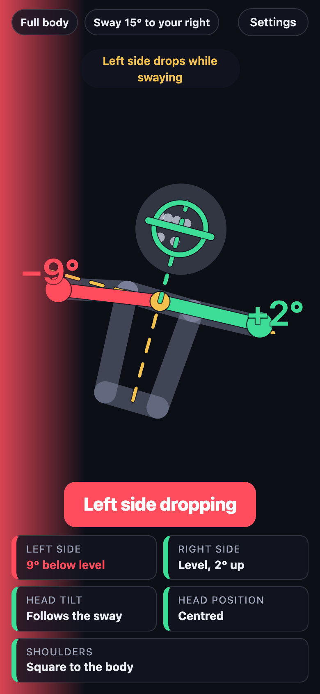

Frame Coach guide
The app watches you through the phone's camera while you hold your Standard frame. It turns either side of the frame red when it drops and tells you when your head tilts or drifts off centre. Every check is measured against your own sway, so swaying correctly never shows as a fault.
- Open the appLive camera check
- Watch the demoA stick figure runs through four common faults, no camera needed
- How it worksThe measurements, their limits and the code
On this page: First time · Camera setup · Reading the screen · Using it in practice · Settings · Limits · Troubleshooting
First time
- Open the app link in Safari on your iPhone (or Chrome on the Mac).
- Tap Start camera and allow camera access.
- Wait for the tracking model to load. The first load downloads about 40 MB, so use Wi-Fi. Later loads are faster.
- Optional: in Safari tap Share, then Add to Home Screen. If the camera does not start from the home-screen icon, open the link in Safari instead.
If the app link shows a GitHub 404 page, the site has not been switched on yet. The repo owner turns it on once under Settings → Pages: Source "Deploy from a branch", branch main, folder / (root). It goes live a minute or two later.
Camera setup
- Prop the phone upright, at about chest height, 2 to 3 metres away.
- Face the camera squarely. The checks are only reliable while your chest faces it.
- The phone does not have to be level. The app measures from your body, so a tilted phone gives the same readings.
- Light from the front works best. A top that contrasts with the wall, and sleeves that show the elbows, help the tracking.
Full body or torso
With your hips in view you get all five checks. The app draws a line from the middle of your hips to the middle of your shoulders and treats that as your body's vertical; "level" is square to it.
Waist-up also works. The app then uses your shoulder line as level and drops the shoulder check. In this view it cannot tell a whole side dropping (shoulder and elbow together) from sway, so stand back far enough to show the hips when you can. The chip at the top left says which view is in use.
Reading the screen

- Gold dashed line through your shoulders: your level line. It tilts with your sway. Each arm line should sit on it or above it. In full-body view a second gold dashed line runs down to your hips; that is your body axis.
- Green arm line: from the middle of your shoulders to that elbow, at or above level. The number shows how far above (+) or below (−) level it sits, in degrees.
- Red arm line and a red glow on that edge of the screen: that side is dropping. Both red at once is the umbrella frame.
- Ring on your head and the line across your face: the face line turns red when your head does not tilt with your sway. The ring turns red when your head drifts sideways.
- Dashed upright line rising from the middle of your shoulders: your body axis carried up, where the centre of your head should sit. It leans with your sway. A solid red line joins it to your head when you drift.
The banner at the bottom names the most important problem at that moment, in this order: both sides dropping, one side dropping, head tilt, head drifting, shoulder dropping. The tiles under it give each check's reading. Left and right always mean your own left and right.
A fault has to last about 0.15 seconds before it shows, and it clears once you are back inside the tolerance with a little margin. Brief wobbles and tracking jitter do not show.
Using it in practice
- Set the frame. Take hold alone, facing the camera, and adjust until both arms and the head are green.
- Sway check. Sway slowly to one side, hold for three seconds, come back through upright and repeat to the other side. Watch both numbers, especially on the side you sway toward.
- Moving. Steps that keep your chest toward the camera read well. During turns the shoulders face away and the readings stop meaning anything.
- Keep a recording. On iPhone, start Screen Recording from Control Centre before you dance. The recording keeps the overlay, so you can review it or show it in a lesson. The app itself records nothing.
Settings
Tap Settings at the top right. Changes apply straight away and are remembered on that device.
| Setting | What it does | Default |
|---|---|---|
| View | Auto picks full body when the hips are visible and torso otherwise. Pick one to stop it switching. | Auto |
| Checks | Switch any of the five checks off. A switched-off check reads "Turned off", stays grey on screen and never reaches the banner. | All on |
| Mirror image | Shows the picture like a mirror. | On |
| Use rear camera | Sharper picture, but you cannot see the screen unless someone holds the phone. Turns mirroring off. | Off |
| Faster, less precise tracking | For older phones. Use it if the picture lags; on larger screens a frame-rate counter shows at the top. | Off |
| Side may sit below level by | How far an elbow may sit below the level line before that side counts as dropping. 0° is the strict rule. | 3° |
| Head tilt allowed | How far the head may tilt away from your sway. | 5° |
| Head off centre allowed | How far the head centre may sit to one side of the body axis, as a share of half your shoulder width. | 40% |
| Shoulder tilt allowed | How far the shoulder line may tilt against your body axis (full body only). | 4° |
The 3° side tolerance covers tracking jitter and the fact that the elbow usually sits a little below the shoulder joint. If correct frames show red, raise it; if a drop you can see stays green, lower it.
Limits
- Readings are reliable only while your chest faces the camera.
- It is built for practising alone. A partner in hold hides your elbows and their body.
- Elbows held forward or back look shorter on camera. Whether they read as above or below level stays correct.
- A bend at the waist shows partly as sway. In full-body view the shoulder check picks up the rest.
- Points the tracker is unsure of show as "not visible" and never as faults.
Troubleshooting
"Camera access was blocked"
On iPhone, tap aA in Safari's address bar, then Website Settings, and set Camera to Allow. Also check Settings → Apps → Safari → Camera. On the Mac in Chrome, click the camera icon at the right of the address bar and allow it. Then reload the page.
"Step into view so both shoulders and elbows are visible"
Step back or move the phone until both elbows are in the picture with some space around them.
An elbow or the face shows "not visible"
Add light from the front, show the elbows (short or fitted sleeves) and keep your arms inside the picture.
The picture lags
Turn on Faster, less precise tracking, close other apps and keep the phone plugged in for long sessions.
The page shows a GitHub 404
The site is not switched on yet. See the note under First time.